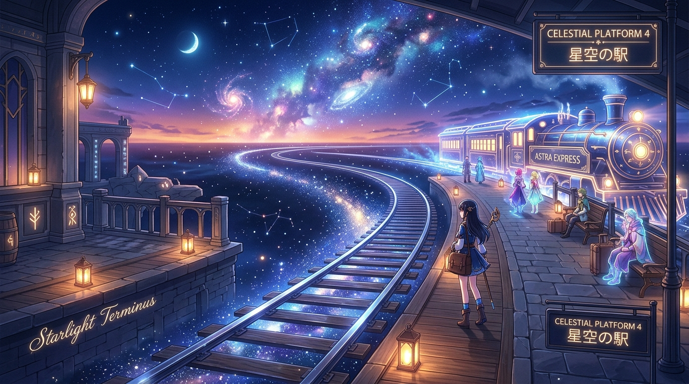

N3
N3
Cosmic Fantasy • Kỳ ảo
銀河鉄道の夜
Night on the Galactic Railroad
Cậu bé Giovanni bước lên chuyến tàu lửa ngân hà chạy xuyên qua các chòm sao kỳ vĩ cùng người bạn Campanella.

"先生は、黒板に吊した大きな黒い星座の図の、上から下へ白くけむった銀河の帯のようなところを指しながら..."
Tích lũy kinh nghiệm và duy trì chuỗi học tập
Đọc truyện tiếng Nhật ít nhất 15 phút hôm nay.
Ôn tập 10 thẻ từ vựng đến hạn bằng thuật toán SM-2.
Lưu 3 từ vựng mới vào kho từ cá nhân khi đọc truyện.
Tác phẩm phù hợp với lộ trình học của bạn
 N4
N3
N4
N3
Cậu bé Giovanni bước lên chuyến tàu lửa ngân hà chạy xuyên qua các chòm sao kỳ vĩ cùng người bạn Campanella.
N4
Một thầy giáo trẻ bộc trực, nóng nảy nhưng đầy khí chất chính nghĩa từ Tokyo đến dạy học tại trường trung học ở Shikoku.
Câu chuyện cảm động sâu sắc về chú cáo nhỏ tinh nghịch Gon tìm cách chuộc lỗi với anh nông dân Hyoju bằng những món quà vô danh.
Kiệt tác đoạt giải Nobel văn học khắc họa mối tình buồn giữa chàng Shimamura và nàng geisha Komako tại vùng suối nước nóng phủ tuyết.
「ではみなさんは、そういうふうに川だと云われたり、乳の流れたあとだと云われていたこのぼんやりと白いものがほんとうは何かご承知ですか」
先生は、黒板に吊した大きな黒い星座の図の、上から下へ白くけむった銀河の帯のようなところを指しながら、みんなに問いをかけました。
カムパネルラが手をあげました。それから四五人手をあげました。ジョバンニも手をあげようとして、急いでそのままやめました。たしかにあれがみんな星だと、いつか雑誌で読んだのでしたが、このごろはジョバンニはまるで毎日教室でもねむく、本を読むひまも読む本もないので、なんだかそんなことはみんなうすれてしまったように思われたのでした。
ところが先生は早くもそれを見附けたのでした。 「ジョバンニさん。あなたはわかっているのでしょう」 ジョバンニは勢いよく立ちあがりましたが、立って見るともうはっきりとそれを答えることができませんでした。
Tổng hợp từ vựng được trích xuất từ các tiểu thuyết đã đọc
| Từ vựng (Kanji) | Cách đọc (Furigana) | Ý nghĩa tiếng Việt | Cấp độ | Tiểu thuyết nguồn | Lần lặp | Trạng thái SRS |
|---|---|---|---|---|---|---|
| 銀河 | ぎんが | Ngân hà, dải thiên hà | N3 | 銀河鉄道の夜 | 1 lần | Cần ôn tập |
| 星座 | せいざ | Chòm sao, tinh tú | N3 | 銀河鉄道の夜 | 1 lần | Cần ôn tập |
| 無鉄砲 | むてっぽう | Hấp tấp, liều lĩnh, không suy nghĩ | N1 | 坊っちゃん | 2 lần | Cần ôn tập |
| 国境 | こっきょう | Biên giới quốc gia, ranh giới tỉnh | N3 | 雪国 | 2 lần | Còn 2 ngày |
| いたずら | いたずら | Nghịch ngợm, trò đùa tai quái | N4 | ごんぎつね | 2 lần | Còn 1 ngày |